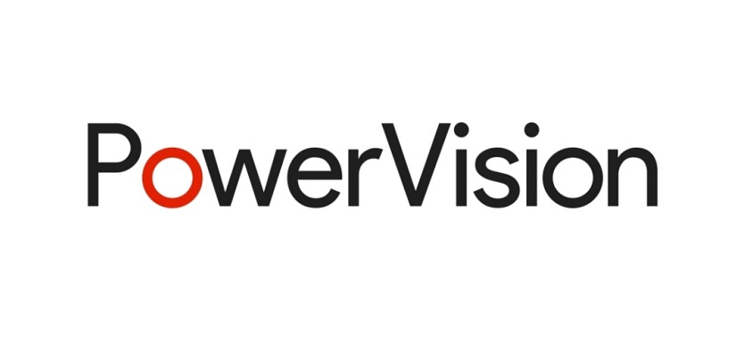
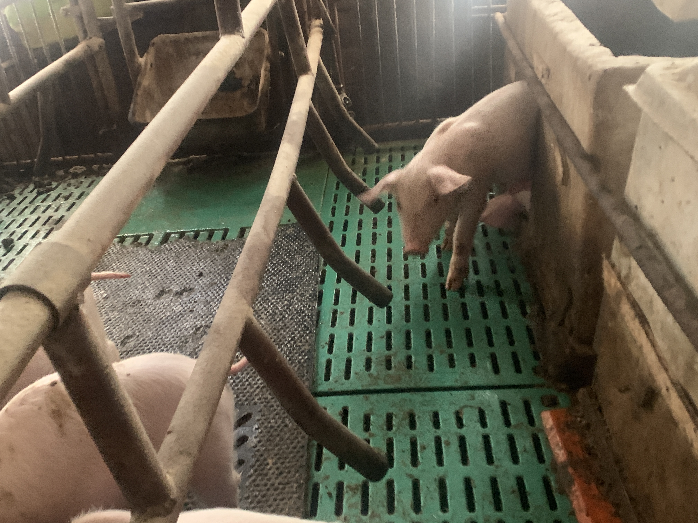
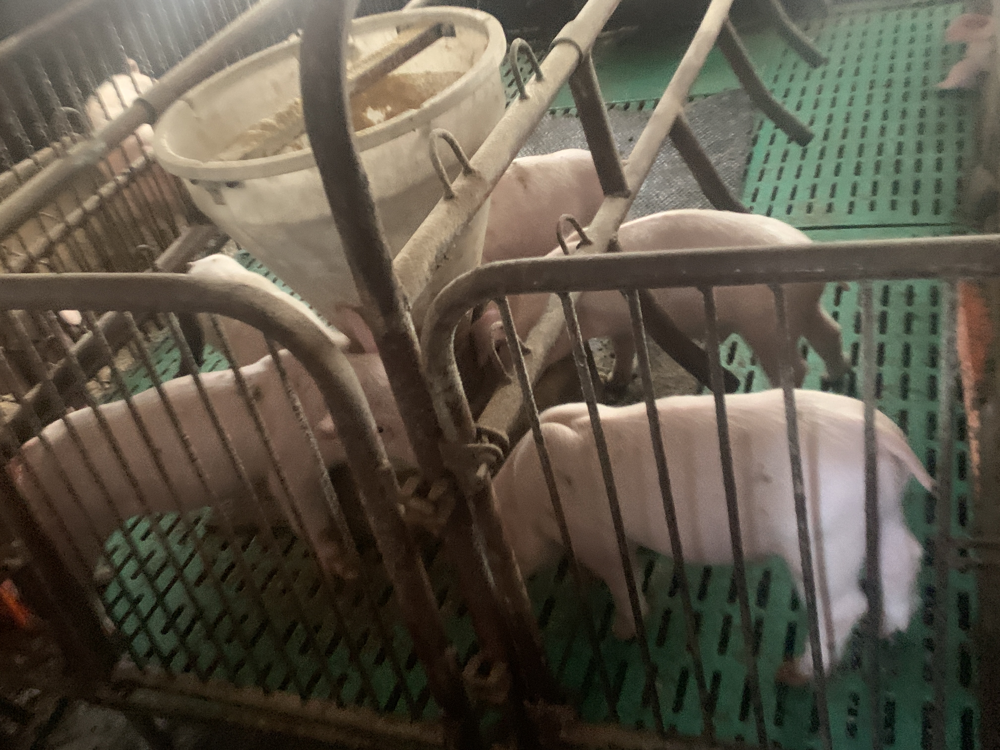
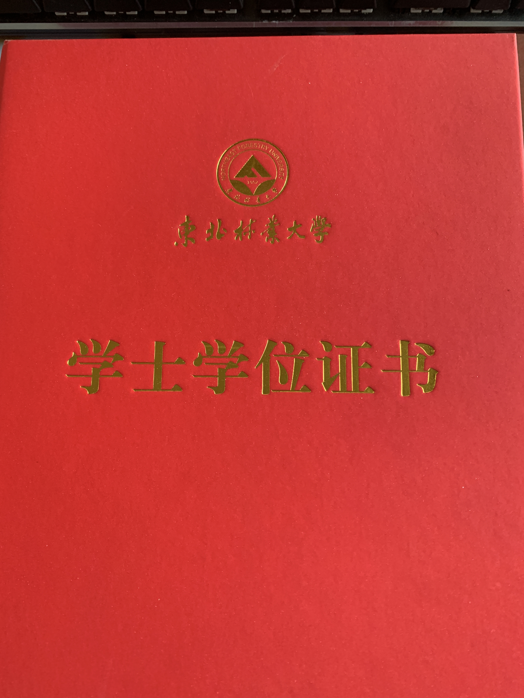
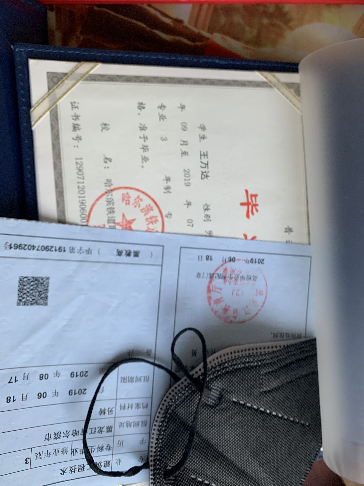
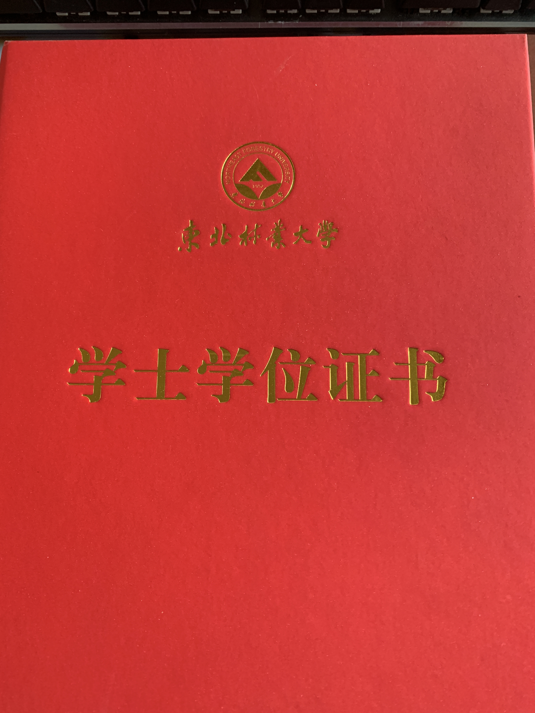
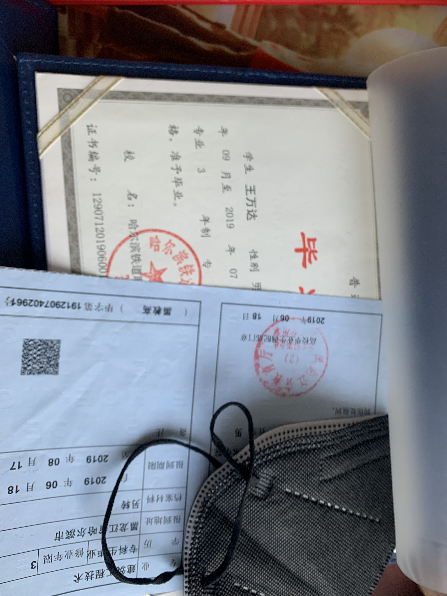
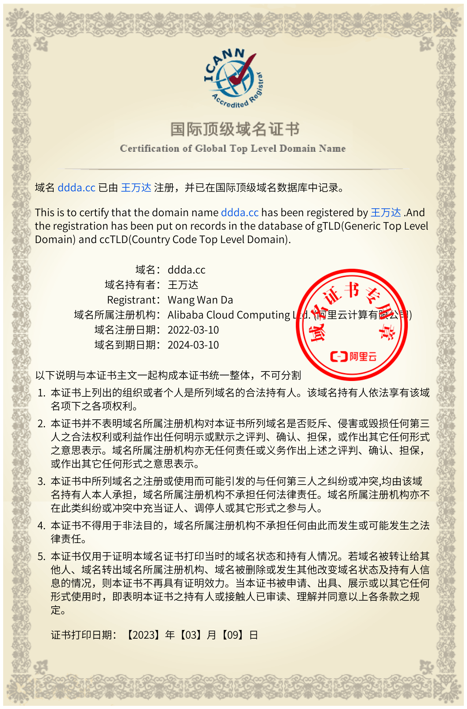
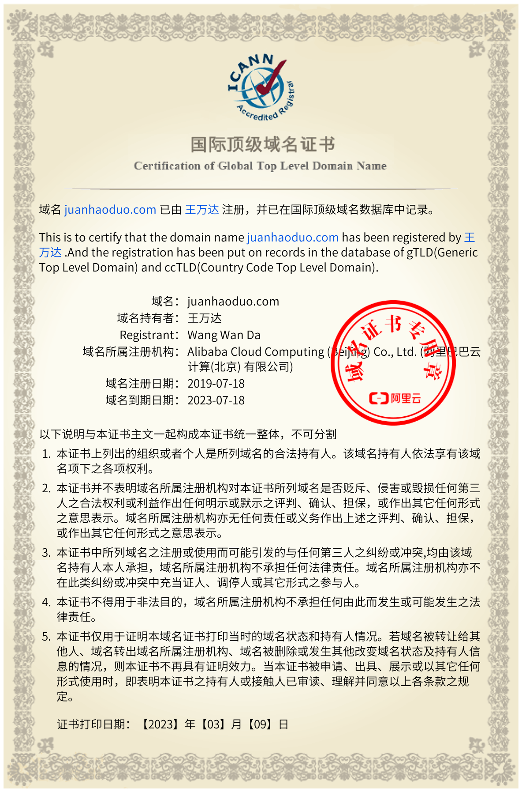

-
- Basic info. 基本信息
- 个人信息: 王万达 / 男 /生于1997年
- 教育背景: 哈尔铁道职业技术学院(2016-2020)
- 教育背景: 东北林业大学(专升本2020-2022)
- 博客地址:点击网址访问：https://ddda.cc（博客置顶有写过sql的知识！）
- 所修专业: 计算机科学与技术 / 辅修建筑工程
- 业余爱好: 科幻电影,跑步,健身,看书
- 个人代码仓库: https://github.com/fhpeerless
- 简历PDF下载: >>>>>>进入下载<<<<<<
- Skill. 专业自评
-
1、熟读《计算机网络》，《计算机操作系统》，《计算机组成原理》，精读谭浩强《c语言基础》，严蔚敏《数据结构》等 2、一个月学会c语言便直接写出了自动关机软件 3、统学：photoshop（ps），PR，office。linux，sql sever 4、对尚未达到企业岗位的所具备的技能能在极端的时间里学习并掌握。 5、辅修书目建筑力学;工程CAD ;建筑设备 ;房屋建筑学;高等数学;建筑制图;建筑材料;建筑工程测量;地基与基础;建筑结构;建筑施工技术;建筑工程计量与计价;工程建设法规与合同管理。
-
- Professional Experience. 工作经历
哈尔滨第一工程公司（2019.11 - 2020.10）
-
资料员
1.项目的所有图纸的接收、清点、登记、发放、归档、管理工作 2、收集整理施工过程中所有技术变更、洽商记录、会议纪要等资料并归档：
参与编写过后天淘客程序（2020.11 - 2021.3）
项目经历
-
后天淘客电商平台
项目描述： 依托于真实电商项目，从解决初期单体问题开始，随着项目不断演变，到掌握解决电商平台“高可用、高并发、高性能”的技术需求,多平台依托有淘宝，京东，拼多多，抖音等电商于一起的一个淘客网站程序.
自助创业（2021.11 - 2022.11）
-
类目
1、理财：对投资项目的一个评估，分析盘面的涨势等，听取最近相关政策的改变，以及最新消息对所投资的必中利空或者利好。 2、养殖：在玉米价格超低猪价很高时曾大批养殖母猪繁育。养殖数量最高时近400余头，以玉米，稻谷，饲料喂养
项目经历
-
 
- Certificates. 相关证书
-
毕业证书
 



- Certificates. 域名证书
-
域名证书
 
王万达的简历
(゜-゜)つ只有不断进步的人，才永远不会被淘汰！
-
- Contact. 联系方式
- 电话: 15561892155;
- 邮箱: 68208932@qq.com
- 微信: fhpeerless
- WeChat扫码：
- 博客地址，点击网址访问：https://xtwa.org
博客置顶有写过sql的知识！

- 我的淘客地址点网址访问：https://juanhaoduo.com
- QQ: 68208932
-
- Application. 应聘岗位
- 计算机科学技术有关的工作
我可能不最优秀的，但我肯定是踏实肯干，时刻准备进步的人！